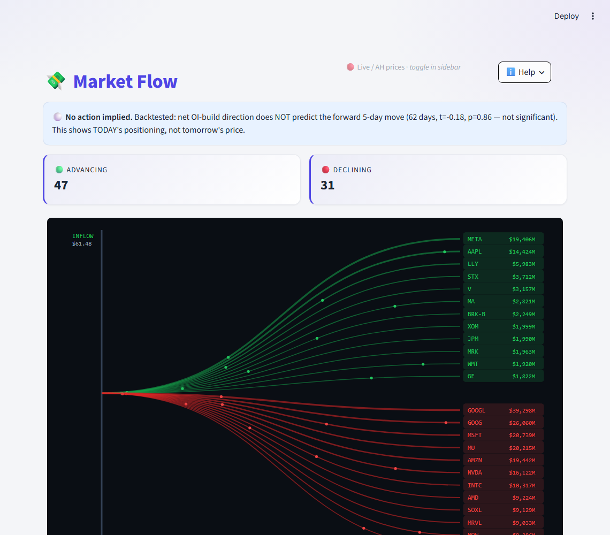
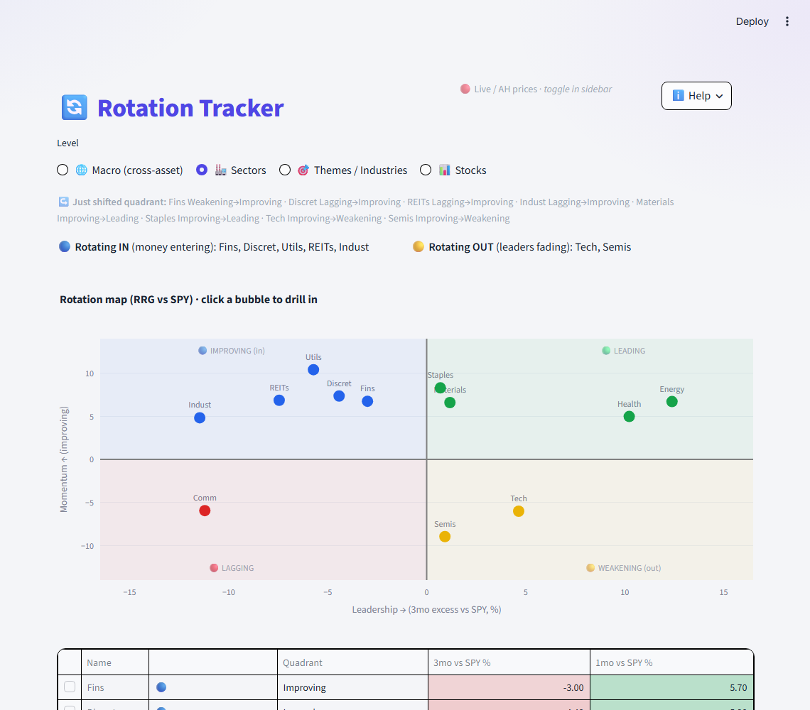
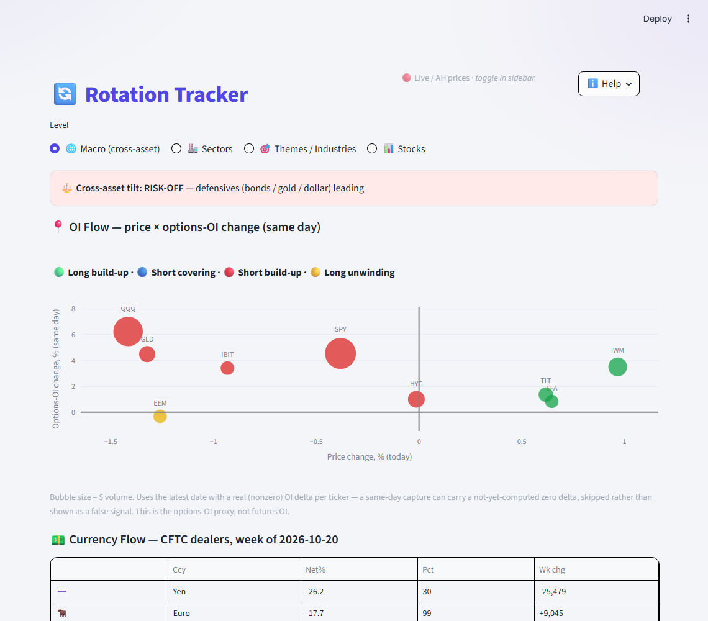
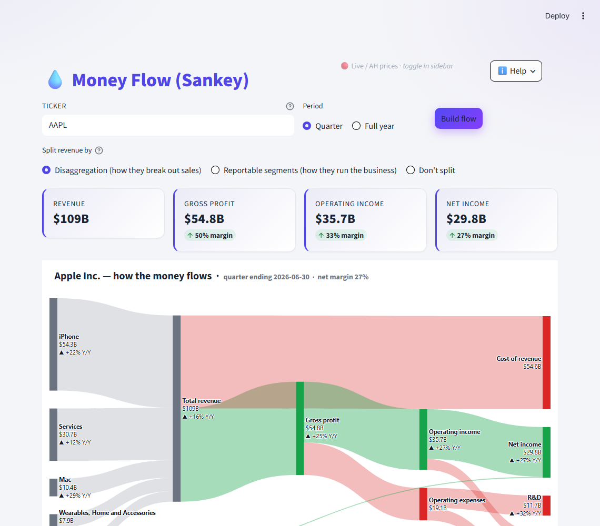
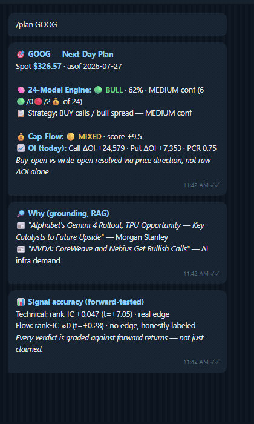

US options intelligence: where money is moving today, which sectors are rotating, and a step-by-step check before every trade. On the web and in Telegram.
Early access is opening in small groups. Leave a public way to reach you.
Where money is moving today: a live ribbon of the biggest inflow and outflow names, with market breadth.
Which sectors, themes and assets are gaining leadership, and which are fading.
How a company's revenue turns into profit, as one picture.
An institutional-desk check, step by step, before you place a trade.
The same views and alerts on your phone, wherever you are.
…and many more exciting features on the way.





Real market data.